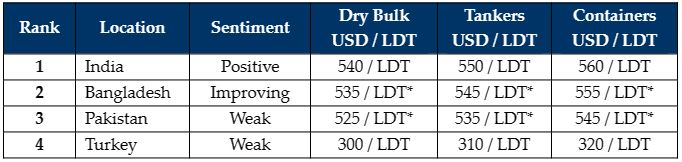

inWeekly Demolition Reports23/01/2023

A degree of increased positivity has entered recycling markets this week, as prices push on in both India (off the back of firming steel and settling currencies) and Bangladesh (off of a rising demand and a currency that has recently found its stability around BDT 105).
In fact, a number of sales have reportedly even taken place at increasingly firm numbers, giving Ship Owners a greater sense of confidence to offer their recycling candidates up for sale, especially after an altogether bleak 2 quarters.
Financing problems persist in both Bangladesh and Pakistan, but End Buyers in both locations are endeavoring to find alternate solutions (rarely successful at this stage) to open L/Cs (including private financing not going through government banks, foreign currency L/Cs and even usance L/Cs), now that markets seem to be stabilizing and even firming up again.
Plots across most locations remain fairly barren after one of the slowest years (in terms of recycling volumes) in decades and as such, demand for new units is ramping up across all markets and as prices increase, so too do the number of available candidates for sale after a relative dearth at the end of last year.
Even in Turkey, despite a drop in steel plates and a currency that has been relatively unchanged for the last couple of weeks, prices have held their ground amidst growing news of units being talked about basis a Spring delivery.
Overall, the supply of vessels is mostly coming from the container sector (with another sold this week) and an increasing number of HKC green sales – thus putting the deal focus squarely on Alang for another week. Moreover, as dry bulk charter rates weaken and we enter a period of relative inactivity due to Chinese New Year holidays, we do expect to see even more dry candidates heading the recycling path in the weeks / months ahead.
For week 3 of 2023, GMS demo rankings / pricing for the week are as below.

📄 Download PDF: Ship-recycling-market-insight-week-03-2023-Seeking-Supply.pdfSource: GMS,Inc. ,https://www.gmsinc.net/gms_new/index.php/web